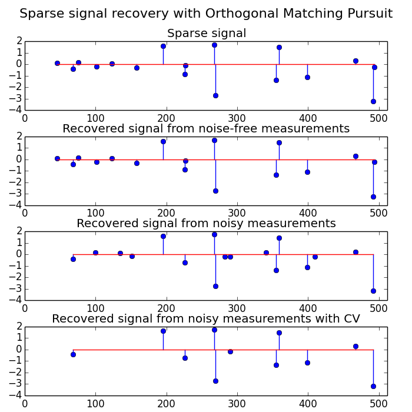

Orthogonal Matching Pursuit¶
Using orthogonal matching pursuit for recovering a sparse signal from a noisy measurement encoded with a dictionary
Python source code: plot_omp.py
print(__doc__)
import pylab as pl
import numpy as np
from sklearn.linear_model import OrthogonalMatchingPursuit
from sklearn.linear_model import OrthogonalMatchingPursuitCV
from sklearn.datasets import make_sparse_coded_signal
n_components, n_features = 512, 100
n_nonzero_coefs = 17
# generate the data
###################
# y = Xw
# |x|_0 = n_nonzero_coefs
y, X, w = make_sparse_coded_signal(n_samples=1,
n_components=n_components,
n_features=n_features,
n_nonzero_coefs=n_nonzero_coefs,
random_state=0)
idx, = w.nonzero()
# distort the clean signal
##########################
y_noisy = y + 0.05 * np.random.randn(len(y))
# plot the sparse signal
########################
pl.figure(figsize=(7, 7))
pl.subplot(4, 1, 1)
pl.xlim(0, 512)
pl.title("Sparse signal")
pl.stem(idx, w[idx])
# plot the noise-free reconstruction
####################################
omp = OrthogonalMatchingPursuit(n_nonzero_coefs=n_nonzero_coefs)
omp.fit(X, y)
coef = omp.coef_
idx_r, = coef.nonzero()
pl.subplot(4, 1, 2)
pl.xlim(0, 512)
pl.title("Recovered signal from noise-free measurements")
pl.stem(idx_r, coef[idx_r])
# plot the noisy reconstruction
###############################
omp.fit(X, y_noisy)
coef = omp.coef_
idx_r, = coef.nonzero()
pl.subplot(4, 1, 3)
pl.xlim(0, 512)
pl.title("Recovered signal from noisy measurements")
pl.stem(idx_r, coef[idx_r])
# plot the noisy reconstruction with number of non-zeros set by CV
##################################################################
omp_cv = OrthogonalMatchingPursuitCV()
omp_cv.fit(X, y_noisy)
coef = omp_cv.coef_
idx_r, = coef.nonzero()
pl.subplot(4, 1, 4)
pl.xlim(0, 512)
pl.title("Recovered signal from noisy measurements with CV")
pl.stem(idx_r, coef[idx_r])
pl.subplots_adjust(0.06, 0.04, 0.94, 0.90, 0.20, 0.38)
pl.suptitle('Sparse signal recovery with Orthogonal Matching Pursuit',
fontsize=16)
pl.show()
Total running time of the example: 0.30 seconds ( 0 minutes 0.30 seconds)